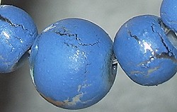

Soarele | B.D.C
- EGIPT: ?ara unde Soarele e frate cu de?ertul
EGIPT: ?ara unde Soarele e frate cu de?ertul. Luna de miere exoticã la Hurghada. Cei mai mul?i dintre români aleg sã-?i petreacã a?a zisa lunã de miere, care de cele mai multe ori se transfromã într-o sãptãmânã de concediu, cu harta în mânã. - Omul deşert | Viata ca un drog
Soarele şi luna …baladă populară culeasă de Gh. Dem. Teodorescu. Foaie de cicoare, În prunduţ de mare Iată că-mi răsare Puternicul Soare. Dar el nu-mi răsare, Ci va să se-nsoare; Că mi-a tot umblat Lumea-n lung şi-n lat, - Soarele | B.D.C
Soarele-mi vedea Şi îmărmurea, Şi se văieta, Năvodari chema, Năvod aducea Şi-n mare-l băga; Mulţi galbeni că da Să-i scoaţă dalba. Luptă ce-mi lupta În deşert erea, Că ei n-o găsea Şi n-o mai prindea; Făr' de... ce-mi scotea Şi-n năvod trăgea? O mreană de mare Cu solzii de zare. Pe mal d-o scotea, Pe mal d-o zvârlea, - Locul unde Soarele nu creează nicio umbră. Cum este ...
Virusologii au descoperit că razele ultraviolete (UV) pot distruge 90% dintr-o suprafață contaminată cu noul coronavirus, în aproximativ 30 minute, după ce o persoană infectată a strănutat sau a tușit acolo.. Studii separate au concluzionat că soarele poate distruge aproape în totalitate particulele de virus din aer în doar șase minute. - Soarele şi luna - Povesti Nemuritoare
Meditaţii în deşert care te pot bulversa psihic. În jurul meu nu este nici măcar o umbră. Nimic care să schimbe culoarea nisipului fierbinte. Aici, duşman îţi este soarele ce arde cu o intensitate incredibilă. Dușman îți este și vântul singuratic din deşert. El este compozitorul ce născoceşte muzica turbată. - Soarele poate distruge coronavirusul în 30 de minute ...
Oraşul e acum deşert sărăcăcios Iar soarele dispare ros de vină. În dansul şui al torţei dezlânate, Întreg Egiptul se animă în pereţi. Sub mâini de sclavi cad spicele înalte În cântul-rugă îngânat de cântăreţi Şi ziduri grele se despincă-n văl de fum Stânci risipite din nisipuri se adună, Se rânduiesc palate ... - „Soarele” – Tarta apetisantă din brânză de vaci şi ...
Download-uri Poze : om, natură, pădure, siluetă, Munte, deşert, umbră, întuneric, negru, artă, american, fundal, Curcan, hd, cowboy turci 2448x2448,1069612 - Soarele în citate, maxime, aforisme - diane.ro
Soarele şi luna A mai mitică, Ca o floricică, În mijloc şedea, La lucru lucra, Pe toate-ntrecea; Că ea tot ţesea. Ţesea, -nchindisea, Şi ea se numea Ileana Simzeana, Doamna florilor Ş-a garoafelor, Sora Soarelui, Spuma laptelui. Soare răsărea, Şi Soare-mi venea La gură d-argea. Cu dânsa vorbea, Frumos c-o-ntreba, Din gură-i zicea: - Soarele şi luna - versuri Balade Populare | Versuri.ro
Vector imagine de soarele străluceşte peste munte stânci. ... Soare în deşert. Vectorii sponsorizate . Descarcă . Descriere . Vector imagine de soarele străluceşte peste munte stânci. Categorii. Fundaluri. Licență . Politica de confiden?ialitate . Specificații. 0.58 MB. 2018-06-19 . - Reteta Desert cu bostan "Soarele" - Bucataras.RO
3. Se racesc . Intre timp se curata de coarja portocala in forma de spirala cu un cutit ingust si foarte bine ascutit. Coaja taiata de portocala se inroleaza in forma de floare si se prinde cu o scobitoare.

Facebook Sari la navigare Salt la conținutul principal Sari la conținut secundar Sari la subsol
B.D.C
Blog De Citit .. Si Re-Citit Contact & FAQSoarele
Scrie un comentariu3 iunie 2012 prin Alex
S oarele este o stea G2 obişnuită, una dintre cele mai mult de 100 miliardede stele din galaxia noastră.
diametru: 1,390,000 km. masa: 1.989e30 kg temperatura: 5800 K (suprafaţă) 15,600,000 K (miez)S oarele este de departe cel mai mare corp din Sistemul Solar. Conţine mai mult de 99.8% din masa totală a Sistemului Solar. (Jupitero mare parte din restul de materie).
S oarele este personificat în multe mitologii: grecii îl numesc Helios pe când romanii îi ziceau Sol.
S oarele este alcătuit, în prezent, din aproximativ 75% hidrogen şi 25% heliu după masă (92.1% hidrogen şi 7.8% heliu după numărul de atomi); orice altceva („metale”) se găseşte doar în proporţie de 0.1%. Aceasta se schimbă încet de-a lungul timpului pe măsură ce Soarele converteşte hidrogenul în heliu în miezul său.
S traturile exterioare ale Soarelui execută rotaţie diferenţială : la ecuator, suprafaţa se roteşte o dată la 25.4 zile; în apropierea polilor se face la 36 de zile. Acest comportament ciudat se datorează faptului că Soarele nu este un corp solid cum este Pământul. Efecte asemănătoare apar în planetele gazoase. Rotaţia diferenţială se extinde considerabil în jos, spre interiorul Soarelui însă miezul se roteşte ca un corp solid.
Î n miezul Soarelui (aproximativ 25% din rază spre interior) condiţiile sunt extreme. Temperatura este de 15.6 milione Kelvin şi presiunea este de 250 miliarde atmosfere. În centrul miezului, densitatea Soarelui este mai mare decât de 150 de ori cea a apei.
F luxul de emisie al energiei (3.86e33 erg/secundă sau 386 miliarde de miliarde de megawaţi) este produs de reacţii de fuziune nucleară. În fiecare secundă, aproximativ 700,000,000 tone de hidrogen sunt convertite în 695,000,000 tone de heliu şi 5,000,000 tone (=3.86e33 erg) de energie sub formă de raze gama. În drumul său spre suprafaţă, energia este continuu absorbită şi re-emisă la temperaturi tot mai scăzute astfel încât în momentul ajungerii la suprafaţă, este în mare parte lumină vizibilă. Pentru restul de 20% pe care îi mai are de parcurs până la suprafaţă energia este transportată mai mult prin convecţie decât prin radiaţie.
S uprafaţa Soarelui, numită şi fotosferă , are o temperatură de aproximativ 5800 K. Petele solare sunt regiuni „reci”, de doar 3800 K (apar întunecate doar în comparaţie cu regiunile învecinate). Petele solare pot să fie foarte întinse, ajungând până la 50,000 km în diametru. Petele solare sunt produse de complicate şi încă nu foarte bine înţelese interacţiuni cu câmpul magnetic al Soarelui.
O regiune îngustă numită cromosferă se întinde deasupra fotosferei.
R egiunea extrem de rarefiată de deasupra cromosferei, numită coroană , se întinde milioane de kilometri în spaţiu însă este vizibilă doar în timpul eclipselor . Temperaturile în coroană ating valori de 1,000,000 K.
C âmpul magnetic al Soarelui este foarte puternic (după standardele terestre) şi foarte complicat totodată. Magnetosfera sa (cunoscută şi ca heliosferă) se întinde mult dincolo de Pluto.
Pe langa căldură şi lumină, Soarele emite un flux de densitate redusă de particule încărcate (în mare parte electroni şi protoni) cunoscut sub numele de vânt solar care se propagă prin Sistemul Solar cu o viteză de aproximativ 450 km/sec. Vântul solar şi particulele de energie mult mai înaltă emise de activitatea solară pot avea efecte dramatice pe Pământ trecând de la scurgeri de energie la interferenţe radio sau la frumoasa aurora boreală.
D ate recente de la nava Ulysse arată că în timpul minimului ciclului solar, vântul solar care emană din regiunile polare circulă aproape cu o viteză dublă, 750 kilometri pe secundă, faţă de latitudinile joase. Compoziţia vântului solar pare să difere şi ea în regiunile polare. În timpul maximului solar, totuşi, vântul solar trece pe o viteză medie.
S tudii ulterioare ale vântului solar vor fi efectuate de către recent lansatele nave Wind, ACE şi SOHO de la punctul de stabilitate dinamică situat între Pământ şi Soare la aproximativ 1.6 milioane km de Pământ.
V ântul solar are efecte semnificative asupra cozilor cometelor şi are chiar efecte măsurabile asupra traiectoriilor navelor.
P e suprafaţa Soarelui se văd deseori bucle şi protuberanţe spectaculoase .
A ctivitatea solară nu este însă constantă. Şi nici activitatea petelor solare. S-a înregistrat o perioadă de joasă activitate a petelor solare în ultima jumătate a secolului al 17 lea, numită Mica deviaţie . Coincide cu o situaţie de răceală anormală în Europa de Nord cunoscută uneori sub numele de Mica Epocă de Gheaţă. De la formarea sistemului solar energia emanată de Soare a crescut cu 40%.
Satelitii Soarelui
Există nouă şi un mare număr de obiecte mai mici care orbitează Soarele. (Care anume sunt planete şi care „obiecte mici” nu s-a stabilit exact nici în urma controverselorpe această temă, însă totul se rezumă până la urmă la felul în care se definesc termenii.)
Distanţa Raza Masa Planeta (000 km) (km) (kg) Descoperitor Data --------- --------- ------ ------- ---------- ----- Mercur 57,910 2439 3.30e23 Venus 108,200 6052 4.87e24 Pământ 149,600 6378 5.98e24 Marte 227,940 3397 6.42e23 Jupiter 778,330 71492 1.90e27 Saturn 1,426,940 60268 5.69e26 Uranus 2,870,990 25559 8.69e25 Herschel 1781 Neptun 4,497,070 24764 1.02e26 Galle 1846 Pluto 5,913,520 1160 1.31e22 Tombaugh 1930 Sursa: AstrotmEvaluează asta:
Share :
Tweet EmailApreciază:
Apreciere Încarc...Similare
Categorie: Univers | Etichete: planete , Soare , Stea , Univers
Misterele ascunse de pesterile de gheata ale Europei (Galerie foto) Imprimanta 3D – tehnologia ce va aduce cea de-a doua Revoluţie IndustrialăComment... Anulează răspunsul
Reptilienii ANUNNAKi: Secretul Suprem al Omenirii 50 fotografii de primăvară superbe Lenesul, chiar este lenes? Mituri despre America Cum ne influenţează viaţa,moartea albinelorDiverse Gastronomie Istorie IT&C Natura Turism Univers
andy animale animatie Antarctica apa apocalipsa astronomi astronomie atractii turistice balena bioluminiscenta Brazilia bucuresti buzz camuflaj cascadă cercetatori chimie Comedie cuplu descoperire deşert dragoste dubai elefant emotii europa film filme romanesti Franţa gelozie geologie hormoni istorie Italia jucarii lac lume lumina Luna mancare Mare melci munte NASA natura oameni Oceanul Indian padure pamant Paris planeta planete rechin relatie romanesc sare secret Soare stiinta studiu sustinere tehnologie Terra tokyo top toy story turism Turkmenistan Univers urangutan viata video vulcan woody Creează gratuit un site web sau un blog la WordPress.com. Tema: Grisaille de Nudge Design . %d blogeri au apreciat:
